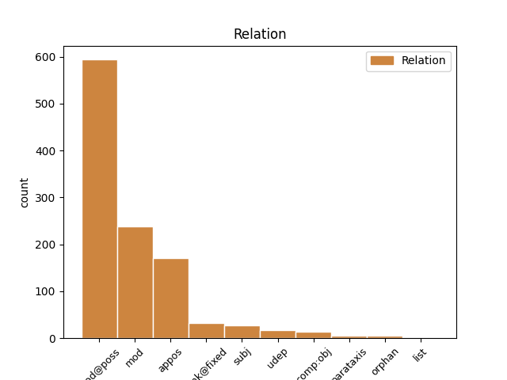
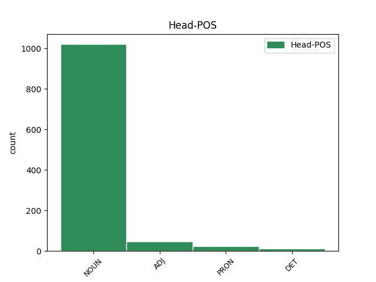
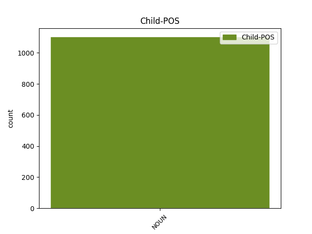

Distribution of features within this leaf



Agreement Rules sorted by frequency.
- When the dependent token is the modifer(mod@poss) of the head token, and the dependent token is NOUN.
1 Men _ _ _ _ 0 _ _ _
2 så _ _ _ _ 0 _ _ _
3 länge _ _ _ _ 0 _ _ _
4 det _ _ _ _ 0 _ _ _
5 råder _ _ _ _ 0 _ _ _
6 brist _ _ _ _ 0 _ _ _
7 på _ _ _ _ 0 _ _ _
8 daghemsplatser _ _ _ _ 0 _ _ _
9 måste _ _ _ _ 0 _ _ _
10 de _ _ _ _ 0 _ _ _
11 förvärvsarbetande _ _ _ _ 0 _ _ _
12 föräldrarnas förälder NOUN NN|UTR|PLU|DEF|GEN Case=Gen|Definite=Def|Gender=Com|Number=Plur 13 mod@poss _ _
13 barn barn NOUN NN|NEU|PLU|IND|NOM Case=Nom|Definite=Ind|Gender=Neut|Number=Plur 0 _ _ _
14 komma _ _ _ _ 0 _ _ _
15 i _ _ _ _ 0 _ _ _
16 första _ _ _ _ 0 _ _ _
17 hand _ _ _ _ 0 _ _ _
18 . _ _ _ _ 0 _ _ _
1 Betonandet _ _ _ _ 0 _ _ _
2 av _ _ _ _ 0 _ _ _
3 troheten _ _ _ _ 0 _ _ _
4 och _ _ _ _ 0 _ _ _
5 av _ _ _ _ 0 _ _ _
6 förlåtelsen _ _ _ _ 0 _ _ _
7 i _ _ _ _ 0 _ _ _
8 den _ _ _ _ 0 _ _ _
9 kristna _ _ _ _ 0 _ _ _
10 äktenskapssynen _ _ _ _ 0 _ _ _
11 ger _ _ _ _ 0 _ _ _
12 åt _ _ _ _ 0 _ _ _
13 denna _ _ _ _ 0 _ _ _
14 en _ _ _ _ 0 _ _ _
15 sådan _ _ _ _ 0 _ _ _
16 karaktär _ _ _ _ 0 _ _ _
17 , _ _ _ _ 0 _ _ _
18 att _ _ _ _ 0 _ _ _
19 man _ _ _ _ 0 _ _ _
20 har _ _ _ _ 0 _ _ _
21 allt _ _ _ _ 0 _ _ _
22 skäl _ _ _ _ 0 _ _ _
23 att _ _ _ _ 0 _ _ _
24 hävda _ _ _ _ 0 _ _ _
25 att _ _ _ _ 0 _ _ _
26 den _ _ _ _ 0 _ _ _
27 människa _ _ _ _ 0 _ _ _
28 som _ _ _ _ 0 _ _ _
29 accepterar _ _ _ _ 0 _ _ _
30 premisserna _ _ _ _ 0 _ _ _
31 för _ _ _ _ 0 _ _ _
32 den _ _ _ _ 0 _ _ _
33 kristna _ _ _ _ 0 _ _ _
34 etiken _ _ _ _ 0 _ _ _
35 i _ _ _ _ 0 _ _ _
36 denna _ _ _ _ 0 _ _ _
37 också _ _ _ _ 0 _ _ _
38 kan _ _ _ _ 0 _ _ _
39 finna _ _ _ _ 0 _ _ _
40 den _ _ _ _ 0 _ _ _
41 djupaste _ _ _ _ 0 _ _ _
42 humanitet humanitet NOUN NN|UTR|SIN|IND|NOM Case=Nom|Definite=Ind|Gender=Com|Number=Sing 0 _ _ _
43 - _ _ _ _ 0 _ _ _
44 i _ _ _ _ 0 _ _ _
45 betydelsen _ _ _ _ 0 _ _ _
46 realism realism NOUN NN|UTR|SIN|IND|NOM Case=Nom|Definite=Ind|Gender=Com|Number=Sing 42 appos _ SpaceAfter=No
47 , _ _ _ _ 0 _ _ _
48 omtanke _ _ _ _ 0 _ _ _
49 , _ _ _ _ 0 _ _ _
50 hjälp _ _ _ _ 0 _ _ _
51 . _ _ _ _ 0 _ _ _
1 Eftersom _ _ _ _ 0 _ _ _
2 man _ _ _ _ 0 _ _ _
3 har _ _ _ _ 0 _ _ _
4 utgått _ _ _ _ 0 _ _ _
5 från _ _ _ _ 0 _ _ _
6 den _ _ _ _ 0 _ _ _
7 traditionella _ _ _ _ 0 _ _ _
8 familjeformen _ _ _ _ 0 _ _ _
9 finns _ _ _ _ 0 _ _ _
10 det _ _ _ _ 0 _ _ _
11 en _ _ _ _ 0 _ _ _
12 del del NOUN NN|UTR|SIN|IND|NOM Case=Nom|Definite=Ind|Gender=Com|Number=Sing 13 mod _ _
13 forskning forskning NOUN NN|UTR|SIN|IND|NOM Case=Nom|Definite=Ind|Gender=Com|Number=Sing 0 _ _ _
14 om _ _ _ _ 0 _ _ _
15 effekterna _ _ _ _ 0 _ _ _
16 av _ _ _ _ 0 _ _ _
17 att _ _ _ _ 0 _ _ _
18 skilja _ _ _ _ 0 _ _ _
19 barn _ _ _ _ 0 _ _ _
20 från _ _ _ _ 0 _ _ _
21 deras _ _ _ _ 0 _ _ _
22 mor _ _ _ _ 0 _ _ _
23 , _ _ _ _ 0 _ _ _
24 men _ _ _ _ 0 _ _ _
25 så _ _ _ _ 0 _ _ _
26 gott _ _ _ _ 0 _ _ _
27 som _ _ _ _ 0 _ _ _
28 ingen _ _ _ _ 0 _ _ _
29 om _ _ _ _ 0 _ _ _
30 effekterna _ _ _ _ 0 _ _ _
31 av _ _ _ _ 0 _ _ _
32 att _ _ _ _ 0 _ _ _
33 skilja _ _ _ _ 0 _ _ _
34 dem _ _ _ _ 0 _ _ _
35 från _ _ _ _ 0 _ _ _
36 deras _ _ _ _ 0 _ _ _
37 far _ _ _ _ 0 _ _ _
38 . _ _ _ _ 0 _ _ _
1 Man _ _ _ _ 0 _ _ _
2 måste _ _ _ _ 0 _ _ _
3 också _ _ _ _ 0 _ _ _
4 ta _ _ _ _ 0 _ _ _
5 hänsyn _ _ _ _ 0 _ _ _
6 till _ _ _ _ 0 _ _ _
7 barnets _ _ _ _ 0 _ _ _
8 ålder _ _ _ _ 0 _ _ _
9 och _ _ _ _ 0 _ _ _
10 utvecklingsnivå _ _ _ _ 0 _ _ _
11 , _ _ _ _ 0 _ _ _
12 föräldrarnas _ _ _ _ 0 _ _ _
13 inställning _ _ _ _ 0 _ _ _
14 till _ _ _ _ 0 _ _ _
15 kvinnors _ _ _ _ 0 _ _ _
16 förvärvsarbete _ _ _ _ 0 _ _ _
17 och _ _ _ _ 0 _ _ _
18 inte _ _ _ _ 0 _ _ _
19 minst _ _ _ _ 0 _ _ _
20 till _ _ _ _ 0 _ _ _
21 deras _ _ _ _ 0 _ _ _
22 förmåga _ _ _ _ 0 _ _ _
23 att _ _ _ _ 0 _ _ _
24 tillfredsställa _ _ _ _ 0 _ _ _
25 barnets _ _ _ _ 0 _ _ _
26 behov _ _ _ _ 0 _ _ _
27 under _ _ _ _ 0 _ _ _
28 den _ _ _ _ 0 _ _ _
29 tid _ _ _ _ 0 _ _ _
30 de _ _ _ _ 0 _ _ _
31 under _ _ _ _ 0 _ _ _
32 alla all DET DT|UTR/NEU|PLU|IND/DEF Number=Plur|PronType=Tot 0 _ _ _
33 förhållanden förhållande NOUN NN|NEU|PLU|IND|NOM Case=Nom|Definite=Ind|Gender=Neut|Number=Plur 32 unk@fixed _ _
34 är _ _ _ _ 0 _ _ _
35 tillsammans _ _ _ _ 0 _ _ _
36 . _ _ _ _ 0 _ _ _
1 Polygamin _ _ _ _ 0 _ _ _
2 bygger _ _ _ _ 0 _ _ _
3 på _ _ _ _ 0 _ _ _
4 en _ _ _ _ 0 _ _ _
5 patriarkalisk _ _ _ _ 0 _ _ _
6 uppfattning _ _ _ _ 0 _ _ _
7 : _ _ _ _ 0 _ _ _
8 mannen _ _ _ _ 0 _ _ _
9 ( _ _ _ _ 0 _ _ _
10 pater pater NOUN NN|UTR|SIN|IND|NOM Case=Nom|Definite=Ind|Gender=Com|Number=Sing 12 subj _ _
11 = _ _ _ _ 0 _ _ _
12 fader far NOUN NN|UTR|SIN|IND|NOM Case=Nom|Definite=Ind|Gender=Com|Number=Sing 0 _ _ _
13 ) _ _ _ _ 0 _ _ _
14 står _ _ _ _ 0 _ _ _
15 i _ _ _ _ 0 _ _ _
16 centrum _ _ _ _ 0 _ _ _
17 . _ _ _ _ 0 _ _ _
1 Vilket _ _ _ _ 0 _ _ _
2 av _ _ _ _ 0 _ _ _
3 de _ _ _ _ 0 _ _ _
4 tre _ _ _ _ 0 _ _ _
5 länderna _ _ _ _ 0 _ _ _
6 Västtyskland _ _ _ _ 0 _ _ _
7 , _ _ _ _ 0 _ _ _
8 Canada _ _ _ _ 0 _ _ _
9 och _ _ _ _ 0 _ _ _
10 Frankrike _ _ _ _ 0 _ _ _
11 baserar _ _ _ _ 0 _ _ _
12 sin _ _ _ _ 0 _ _ _
13 elkraftproduktion _ _ _ _ 0 _ _ _
14 på _ _ _ _ 0 _ _ _
15 a) _ _ _ _ 0 _ _ _
16 huvudsakligen _ _ _ _ 0 _ _ _
17 vattenkraft _ _ _ _ 0 _ _ _
18 b) b) NOUN NN|NEU|SIN|IND|NOM Case=Nom|Definite=Ind|Gender=Neut|Number=Sing 20 udep _ _
19 huvudsakligen _ _ _ _ 0 _ _ _
20 värmekraft värmekraft NOUN NN|UTR|SIN|IND|NOM Case=Nom|Definite=Ind|Gender=Com|Number=Sing 0 _ _ _
21 c) _ _ _ _ 0 _ _ _
22 ungefär _ _ _ _ 0 _ _ _
23 lika _ _ _ _ 0 _ _ _
24 delar _ _ _ _ 0 _ _ _
25 vatten- _ _ _ _ 0 _ _ _
26 och _ _ _ _ 0 _ _ _
27 värmekraft _ _ _ _ 0 _ _ _
28 ? _ _ _ _ 0 _ _ _
1 Ty _ _ _ _ 0 _ _ _
2 det _ _ _ _ 0 _ _ _
3 ligger _ _ _ _ 0 _ _ _
4 för _ _ _ _ 0 _ _ _
5 Gud _ _ _ _ 0 _ _ _
6 all _ _ _ _ 0 _ _ _
7 makt _ _ _ _ 0 _ _ _
8 uppå _ _ _ _ 0 _ _ _
9 , _ _ _ _ 0 _ _ _
10 att _ _ _ _ 0 _ _ _
11 man _ _ _ _ 0 _ _ _
12 uppfostrar _ _ _ _ 0 _ _ _
13 barn _ _ _ _ 0 _ _ _
14 , _ _ _ _ 0 _ _ _
15 som _ _ _ _ 0 _ _ _
16 äro _ _ _ _ 0 _ _ _
17 samhället samhälle NOUN NN|NEU|SIN|DEF|NOM Case=Nom|Definite=Def|Gender=Neut|Number=Sing 19 comp:obj _ _
18 till _ _ _ _ 0 _ _ _
19 gagn gagn NOUN NN|NEU|SIN|IND|NOM Case=Nom|Definite=Ind|Gender=Neut|Number=Sing 0 _ _ _
20 och _ _ _ _ 0 _ _ _
21 främja _ _ _ _ 0 _ _ _
22 Guds _ _ _ _ 0 _ _ _
23 kunskap _ _ _ _ 0 _ _ _
24 , _ _ _ _ 0 _ _ _
25 ett _ _ _ _ 0 _ _ _
26 saligt _ _ _ _ 0 _ _ _
27 liv _ _ _ _ 0 _ _ _
28 och _ _ _ _ 0 _ _ _
29 alla _ _ _ _ 0 _ _ _
30 dygder _ _ _ _ 0 _ _ _
31 , _ _ _ _ 0 _ _ _
32 så _ _ _ _ 0 _ _ _
33 att _ _ _ _ 0 _ _ _
34 ondskan _ _ _ _ 0 _ _ _
35 och _ _ _ _ 0 _ _ _
36 djävulen _ _ _ _ 0 _ _ _
37 bekämpas _ _ _ _ 0 _ _ _
38 ' _ _ _ _ 0 _ _ _
39 . _ _ _ _ 0 _ _ _
40 1 _ _ _ _ 0 _ _ _
1 ' _ _ _ _ 0 _ _ _
2 Det den PRON PN|NEU|SIN|DEF|SUB/OBJ Definite=Def|Gender=Neut|Number=Sing|PronType=Prs 0 _ _ _
3 som _ _ _ _ 0 _ _ _
4 riktigt _ _ _ _ 0 _ _ _
5 är _ _ _ _ 0 _ _ _
6 jag _ _ _ _ 0 _ _ _
7 själv _ _ _ _ 0 _ _ _
8 ' _ _ _ _ 0 _ _ _
9 - _ _ _ _ 0 _ _ _
10 o _ _ _ _ 0 _ _ _
11 hemska _ _ _ _ 0 _ _ _
12 verklighet verklighet NOUN NN|UTR|SIN|IND|NOM Case=Nom|Definite=Ind|Gender=Com|Number=Sing 2 parataxis _ SpaceAfter=No
13 ! _ _ _ _ 0 _ _ _
14 - _ _ _ _ 0 _ _ _
15 skall _ _ _ _ 0 _ _ _
16 , _ _ _ _ 0 _ _ _
17 enligt _ _ _ _ 0 _ _ _
18 bibelns _ _ _ _ 0 _ _ _
19 lära _ _ _ _ 0 _ _ _
20 om _ _ _ _ 0 _ _ _
21 kärlek _ _ _ _ 0 _ _ _
22 , _ _ _ _ 0 _ _ _
23 varken _ _ _ _ 0 _ _ _
24 blomma _ _ _ _ 0 _ _ _
25 ut _ _ _ _ 0 _ _ _
26 i _ _ _ _ 0 _ _ _
27 någon _ _ _ _ 0 _ _ _
28 sorts _ _ _ _ 0 _ _ _
29 självständighet _ _ _ _ 0 _ _ _
30 eller _ _ _ _ 0 _ _ _
31 gömmas _ _ _ _ 0 _ _ _
32 under _ _ _ _ 0 _ _ _
33 någon _ _ _ _ 0 _ _ _
34 annans _ _ _ _ 0 _ _ _
35 dominans _ _ _ _ 0 _ _ _
36 . _ _ _ _ 0 _ _ _
1 ' _ _ _ _ 0 _ _ _
2 Men _ _ _ _ 0 _ _ _
3 för _ _ _ _ 0 _ _ _
4 att _ _ _ _ 0 _ _ _
5 undgå _ _ _ _ 0 _ _ _
6 otuktssynder _ _ _ _ 0 _ _ _
7 må _ _ _ _ 0 _ _ _
8 var _ _ _ _ 0 _ _ _
9 man _ _ _ _ 0 _ _ _
10 hava _ _ _ _ 0 _ _ _
11 sin _ _ _ _ 0 _ _ _
12 egen _ _ _ _ 0 _ _ _
13 hustru _ _ _ _ 0 _ _ _
14 , _ _ _ _ 0 _ _ _
15 och _ _ _ _ 0 _ _ _
16 var _ _ _ _ 0 _ _ _
17 kvinna kvinna NOUN NN|UTR|SIN|IND|NOM Case=Nom|Definite=Ind|Gender=Com|Number=Sing 0 _ _ _
18 sin _ _ _ _ 0 _ _ _
19 egen _ _ _ _ 0 _ _ _
20 man man NOUN NN|UTR|SIN|IND|NOM Case=Nom|Definite=Ind|Gender=Com|Number=Sing 17 orphan _ Enhanced=obj|SpaceAfter=No
21 . _ _ _ _ 0 _ _ _
22 ' _ _ _ _ 0 _ _ _
23 1 _ _ _ _ 0 _ _ _
Disagree Examples:
1 Dessa _ _ _ _ 0 _ _ _
2 inkomster _ _ _ _ 0 _ _ _
3 är _ _ _ _ 0 _ _ _
4 * _ _ _ _ 0 _ _ _
5 inkomst _ _ _ _ 0 _ _ _
6 av _ _ _ _ 0 _ _ _
7 tjänst _ _ _ _ 0 _ _ _
8 - _ _ _ _ 0 _ _ _
9 lön _ _ _ _ 0 _ _ _
10 , _ _ _ _ 0 _ _ _
11 pension _ _ _ _ 0 _ _ _
12 , _ _ _ _ 0 _ _ _
13 livränta _ _ _ _ 0 _ _ _
14 , _ _ _ _ 0 _ _ _
15 undantagsförmåner _ _ _ _ 0 _ _ _
16 och _ _ _ _ 0 _ _ _
17 övrig _ _ _ _ 0 _ _ _
18 tjänsteinkomst _ _ _ _ 0 _ _ _
19 . _ _ _ _ 0 _ _ _
20 ( _ _ _ _ 0 _ _ _
21 Undantag undantag NOUN NN|NEU|PLU|IND|NOM Case=Nom|Definite=Ind|Gender=Neut|Number=Plur 0 _ _ _
22 : _ _ _ _ 0 _ _ _
23 periodiskt _ _ _ _ 0 _ _ _
24 understöd understöd NOUN NN|NEU|SIN|IND|NOM Case=Nom|Definite=Ind|Gender=Neut|Number=Sing 21 subj _ _
25 eller _ _ _ _ 0 _ _ _
26 därmed _ _ _ _ 0 _ _ _
27 jämförlig _ _ _ _ 0 _ _ _
28 periodisk _ _ _ _ 0 _ _ _
29 inkomst _ _ _ _ 0 _ _ _
30 . _ _ _ _ 0 _ _ _
31 ) _ _ _ _ 0 _ _ _
32 * _ _ _ _ 0 _ _ _
33 inkomst _ _ _ _ 0 _ _ _
34 av _ _ _ _ 0 _ _ _
35 jordbruksfastighet _ _ _ _ 0 _ _ _
36 - _ _ _ _ 0 _ _ _
37 om _ _ _ _ 0 _ _ _
38 den _ _ _ _ 0 _ _ _
39 skattskyldige _ _ _ _ 0 _ _ _
40 arbetat _ _ _ _ 0 _ _ _
41 i _ _ _ _ 0 _ _ _
42 jordbruket _ _ _ _ 0 _ _ _
43 i _ _ _ _ 0 _ _ _
44 ej _ _ _ _ 0 _ _ _
45 blott _ _ _ _ 0 _ _ _
46 ringa _ _ _ _ 0 _ _ _
47 omfattning _ _ _ _ 0 _ _ _
48 . _ _ _ _ 0 _ _ _
49 * _ _ _ _ 0 _ _ _
50 inkomst _ _ _ _ 0 _ _ _
51 av _ _ _ _ 0 _ _ _
52 rörelse _ _ _ _ 0 _ _ _
53 - _ _ _ _ 0 _ _ _
54 om _ _ _ _ 0 _ _ _
55 den _ _ _ _ 0 _ _ _
56 skattskyldige _ _ _ _ 0 _ _ _
57 arbetat _ _ _ _ 0 _ _ _
58 i _ _ _ _ 0 _ _ _
59 rörelsen _ _ _ _ 0 _ _ _
60 i _ _ _ _ 0 _ _ _
61 ej _ _ _ _ 0 _ _ _
62 blott _ _ _ _ 0 _ _ _
63 ringa _ _ _ _ 0 _ _ _
64 omfattning _ _ _ _ 0 _ _ _
65 . _ _ _ _ 0 _ _ _
1 I _ _ _ _ 0 _ _ _
2 självdeklarationen _ _ _ _ 0 _ _ _
3 1971 _ _ _ _ 0 _ _ _
4 - _ _ _ _ 0 _ _ _
5 som _ _ _ _ 0 _ _ _
6 alltså _ _ _ _ 0 _ _ _
7 avser _ _ _ _ 0 _ _ _
8 1970 _ _ _ _ 0 _ _ _
9 års år NOUN NN|NEU|SIN|IND|GEN Case=Gen|Definite=Ind|Gender=Neut|Number=Sing 10 mod@poss _ _
10 inkomster inkomst NOUN NN|UTR|PLU|IND|NOM Case=Nom|Definite=Ind|Gender=Com|Number=Plur 0 _ _ _
11 - _ _ _ _ 0 _ _ _
12 får _ _ _ _ 0 _ _ _
13 avdrag _ _ _ _ 0 _ _ _
14 göras _ _ _ _ 0 _ _ _
15 som _ _ _ _ 0 _ _ _
16 tidigare _ _ _ _ 0 _ _ _
17 . _ _ _ _ 0 _ _ _
1 Förvärvsavdrag _ _ _ _ 0 _ _ _
2 kan _ _ _ _ 0 _ _ _
3 medges _ _ _ _ 0 _ _ _
4 från _ _ _ _ 0 _ _ _
5 A-inkomst _ _ _ _ 0 _ _ _
6 , _ _ _ _ 0 _ _ _
7 om _ _ _ _ 0 _ _ _
8 det _ _ _ _ 0 _ _ _
9 finns _ _ _ _ 0 _ _ _
10 hemmavarande _ _ _ _ 0 _ _ _
11 barn barn NOUN NN|NEU|SIN|IND|NOM Case=Nom|Definite=Ind|Gender=Neut|Number=Sing 0 _ _ _
12 under _ _ _ _ 0 _ _ _
13 16 _ _ _ _ 0 _ _ _
14 år år NOUN NN|NEU|PLU|IND|NOM Case=Nom|Definite=Ind|Gender=Neut|Number=Plur 11 mod _ SpaceAfter=No
15 . _ _ _ _ 0 _ _ _
1 Barns barn NOUN NN|NEU|PLU|IND|GEN Case=Gen|Definite=Ind|Gender=Neut|Number=Plur 2 mod@poss _ _
2 ålder ålder NOUN NN|UTR|SIN|IND|NOM Case=Nom|Definite=Ind|Gender=Com|Number=Sing 0 _ _ _
3 räknas _ _ _ _ 0 _ _ _
4 efter _ _ _ _ 0 _ _ _
5 förhållandet _ _ _ _ 0 _ _ _
6 den _ _ _ _ 0 _ _ _
7 1 _ _ _ _ 0 _ _ _
8 november _ _ _ _ 0 _ _ _
9 under _ _ _ _ 0 _ _ _
10 inkomståret _ _ _ _ 0 _ _ _
11 . _ _ _ _ 0 _ _ _
1 Samhället _ _ _ _ 0 _ _ _
2 har _ _ _ _ 0 _ _ _
3 också _ _ _ _ 0 _ _ _
4 givit _ _ _ _ 0 _ _ _
5 dig _ _ _ _ 0 _ _ _
6 en _ _ _ _ 0 _ _ _
7 rad rad NOUN NN|UTR|SIN|IND|NOM Case=Nom|Definite=Ind|Gender=Com|Number=Sing 8 mod _ _
8 förmåner förmån NOUN NN|UTR|PLU|IND|NOM Case=Nom|Definite=Ind|Gender=Com|Number=Plur 0 _ _ _
9 och _ _ _ _ 0 _ _ _
10 dessa _ _ _ _ 0 _ _ _
11 redovisas _ _ _ _ 0 _ _ _
12 längre _ _ _ _ 0 _ _ _
13 fram _ _ _ _ 0 _ _ _
14 i _ _ _ _ 0 _ _ _
15 broschyren _ _ _ _ 0 _ _ _
16 . _ _ _ _ 0 _ _ _